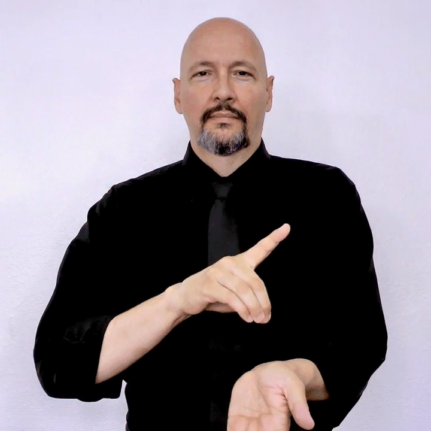

1. Signs for Professions
In sign language, various professions have distinct signs. These signs help you communicate about people's occupations in a simple and effective manner. Below are some common professions and their corresponding signs:
Steps to Perform the Sign:
- Start with both hands in a "C" shape.
- Place both hands on either side of your forehead.
- Make a motion as if you're pulling a pair of glasses down and away from your eyes.

Sign for "Doctor"
Steps to Perform the Sign:
- Start by holding both hands in the shape of "T" (fingers spread, thumb on top).
- Place the hands in front of your chest and move them upward and downward, mimicking the motion of teaching.
Sign for "Teacher"
2. Signs for Emotions
Emotions are an important aspect of communication. In sign language, facial expressions play a key role in conveying emotional states. Here are some signs for common emotions:
Steps to Perform the Sign:
- Place both hands in front of your chest with the palms facing your body.
- Move your hands upward, as if you’re expressing joy or a smile.
- Maintain a happy facial expression throughout.
Sign for "Happy"
Steps to Perform the Sign:
- Place both hands in front of your chest, with the palms facing downward.
- Move your hands downward slowly, as if showing a downward emotional shift.
- Keep a sad or neutral facial expression.
Sign for "Sad"
3. Signs for Places
Sign language also has specific signs for places such as homes, schools, workplaces, and more. Below are some common places and their signs:
Steps to Perform the Sign:
- Make two hands in the shape of a "H" (fingers spread, thumbs pointing up).
- Place them on your face and move them toward your chest to indicate the feeling of being at home.
Sign for "Home"
Steps to Perform the Sign:
- Place the fingers of one hand on the fingers of the other hand, which is in a fist.
- Tap the hands together twice to represent the idea of school or education.
Sign for "School"